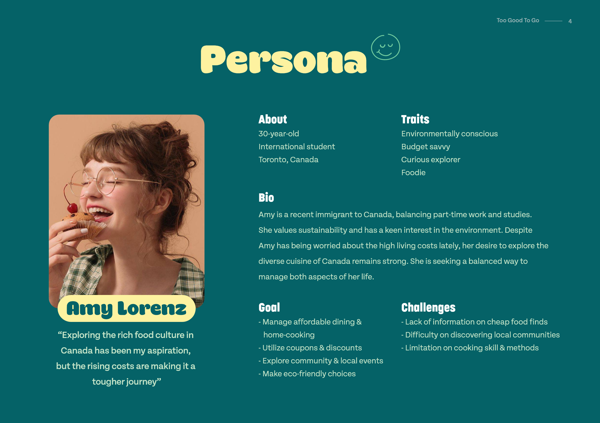
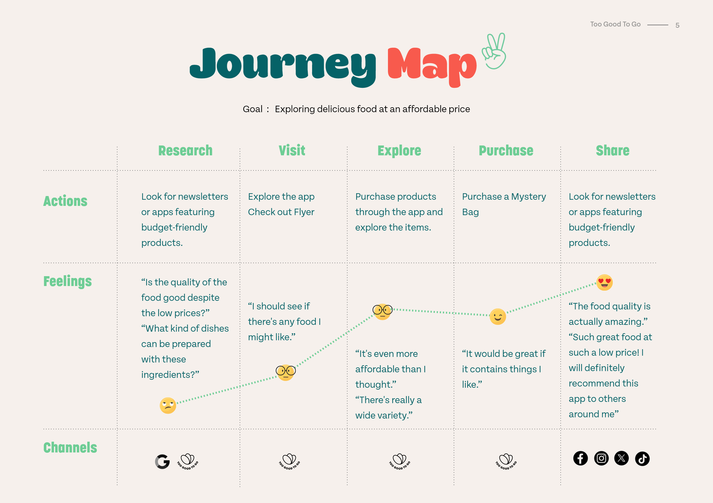
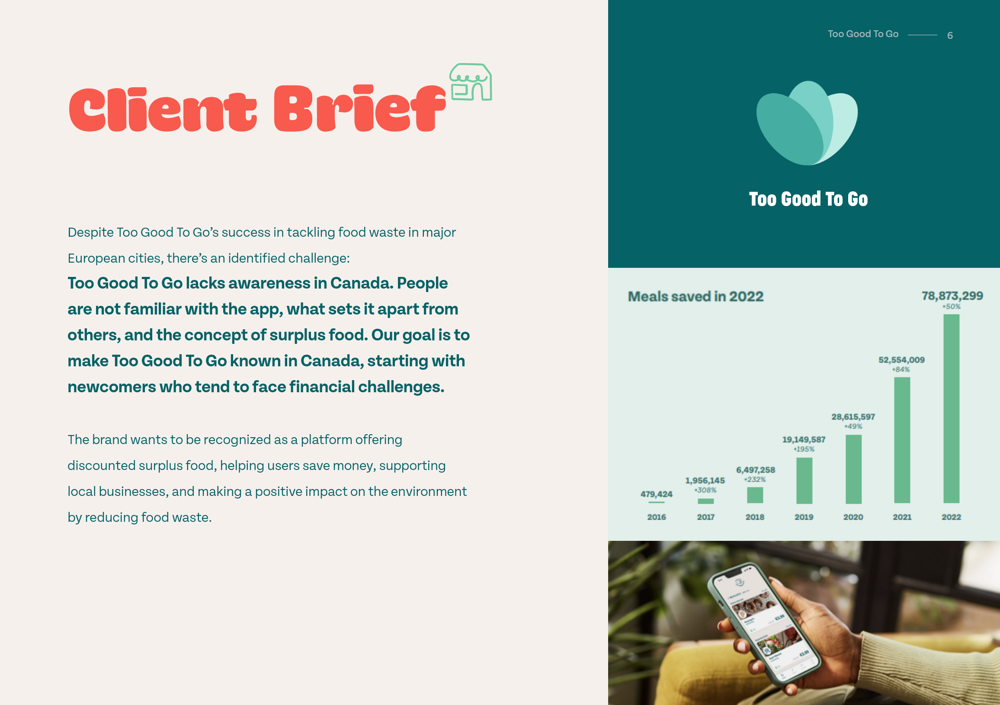
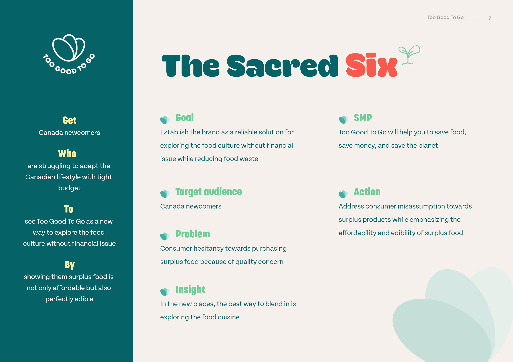
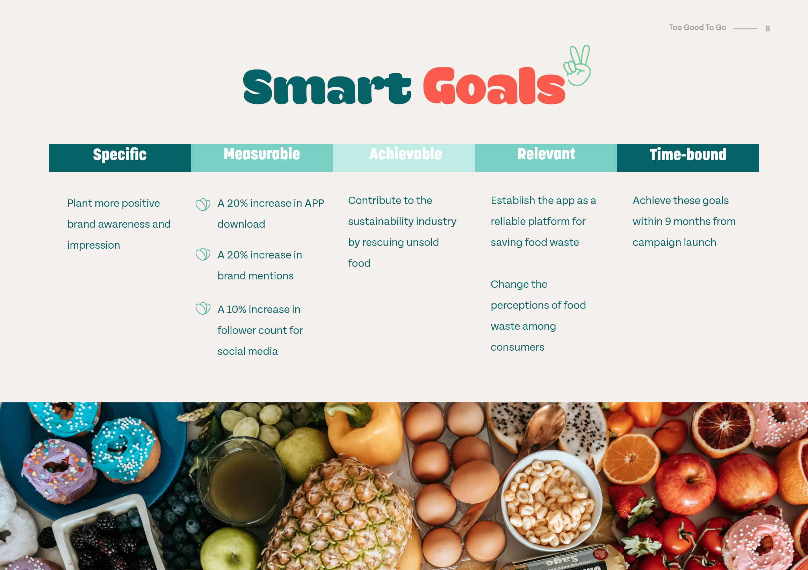
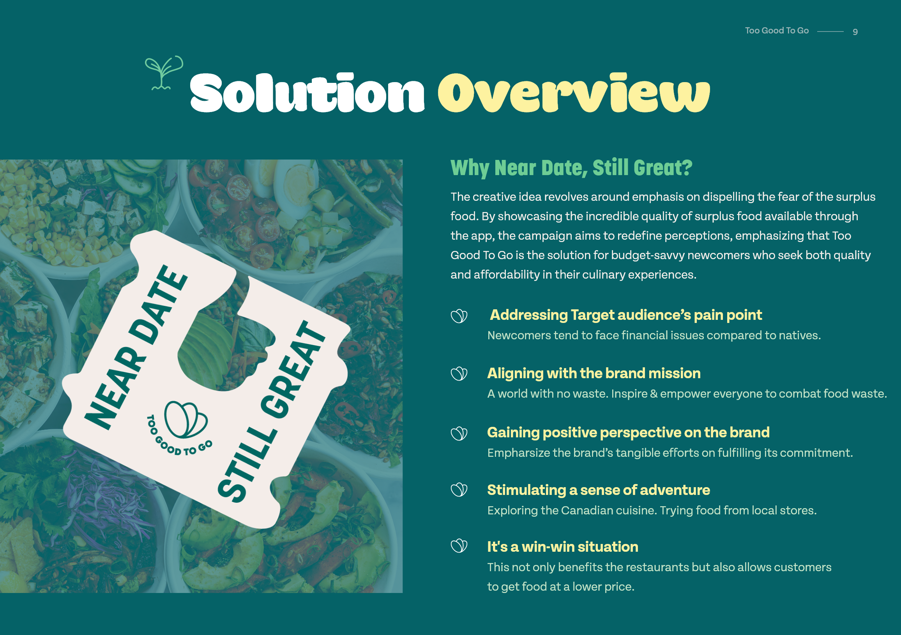
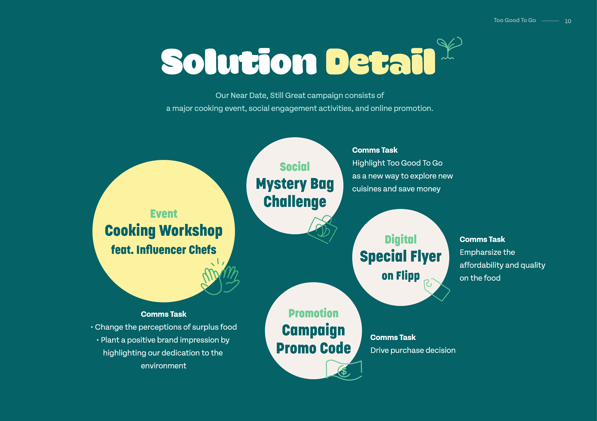
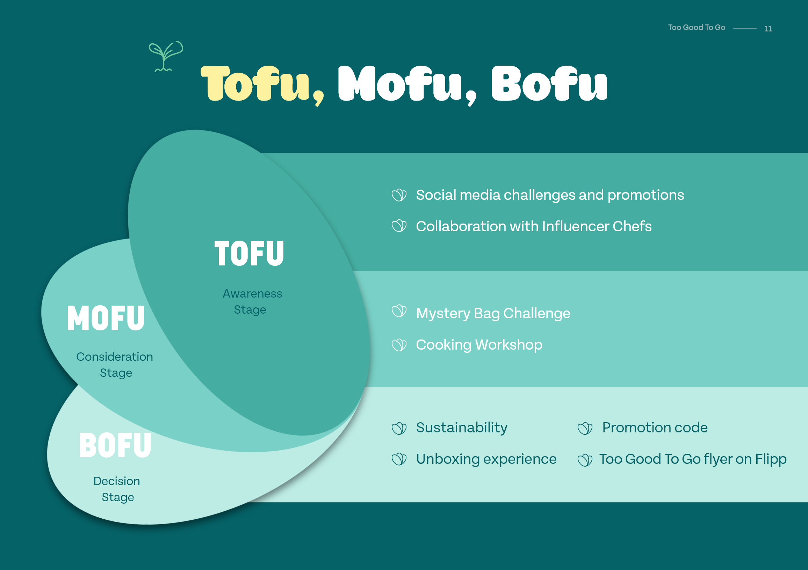
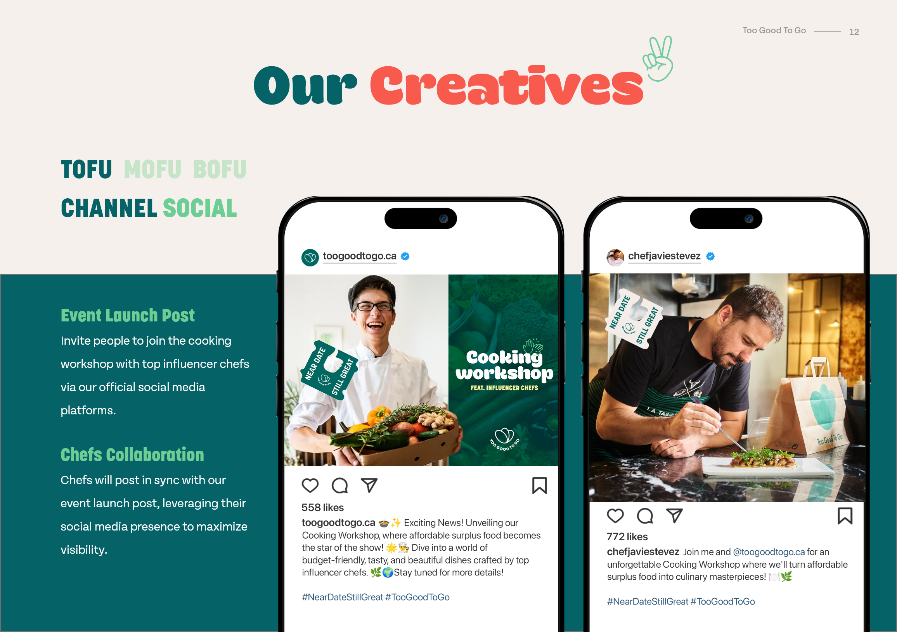
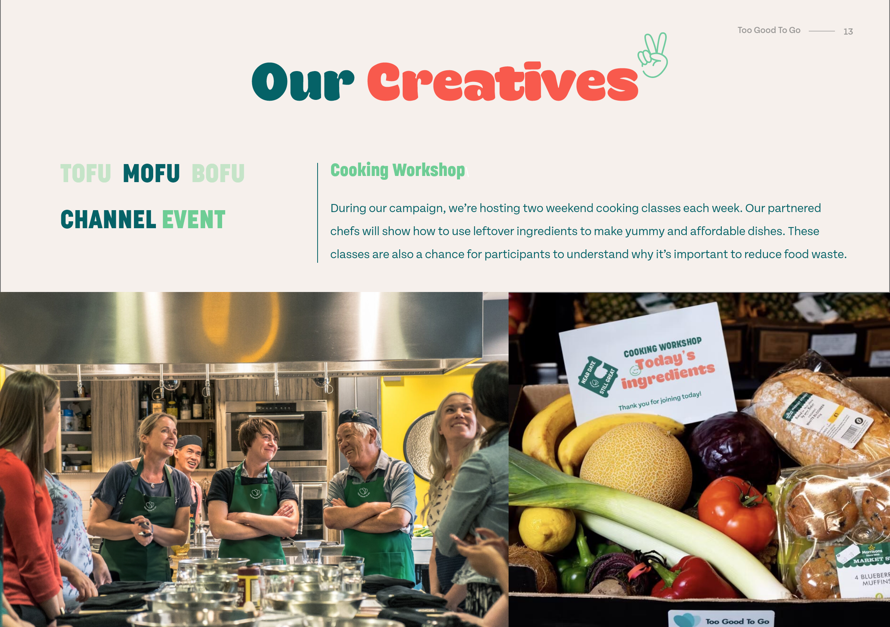

Firstly, we identified the brand's key attributes, values, and unique selling propositions (USPs) through thorough market research and analysis. This helped us understand what sets Too Good To Go apart from competitors and how to effectively communicate its value to the target audience.

Next, we developed detailed buyer personas representing different segments of the Canadian market. These personas were based on demographic, psychographic, and behavioral data, allowing us to tailor our messaging and strategies to resonate with each audience segment.
We also created a customer journey map to visualize the user experience from awareness to conversion and advocacy. This map helped us identify pain points, opportunities for engagement, and touchpoints where the brand could make a meaningful impact on its audience.
        